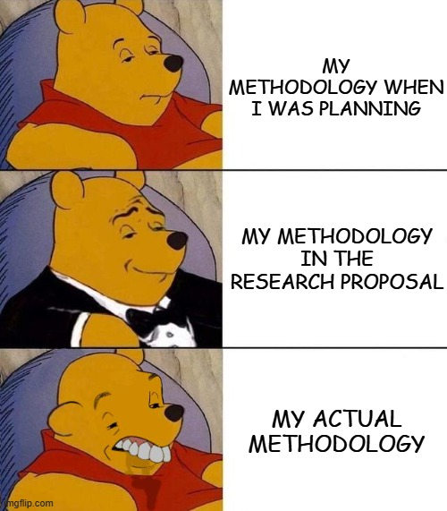

Show code
library(tidyverse)
library(ggplot2)
library(rstanarm)
library(effectsize)
library(pwr)
library(performance)This study investigated whether reward timing uncertainty in social media causally increases compulsive checking behaviour. 100 participants were randomly assigned to one of two conditions in an online behavioural task built on Gorilla Experiment Builder:
The key question: does simply not knowing when your likes will arrive make you check more obsessively?
All analyses were conducted in RStudio (version 2025.05.1+513) using R version 4.5.1.
Declaration: Some part of the code, text, and design in this document were developed, edited and improved with the help of AI tools like ChatGPT and Claude. However, the data itself is entirely original and was neither generated nor altered by AI.
Here are the packages needed to reproduce this analysis. A quick note on what each one does:
glm.nb()library(tidyverse)
library(ggplot2)
library(rstanarm)
library(effectsize)
library(pwr)
library(performance)The raw data comes from four separate CSV files exported from Gorilla and a supplementary questionnaire. 2 separate files include participants consents and email for their volunteer participation in reward draw. Here is what each file contains:
| File | Contents |
|---|---|
bsmas.csv |
Bergen Social Media Addiction Scale responses, 6 items, Likert 1 (very rarely) to 5 (very often) |
age_gender.csv |
Participant age (years) and gender (1 = Male, 2 = Female, 3 = Other) |
screen_time.csv |
Self-reported daily screen time in HH.MM format, e.g. 6.35 means 6 hours 35 minutes |
task.csv |
Full event log from the Gorilla task, one row per action, with timestamps, participant IDs, group assignment, and button presses |
Data is available upon a request!
Here I load the data of each spreadsheet and attribute them to unique variables
age_gender <- read_csv("data_csv/AgeGender.csv")
screenTime <- read_csv("data_csv/screen_time.csv")
BSMAS <- read_csv("data_csv/BSMAS.csv")
controlGroup <- read_csv("data_csv/task_control.csv")
treatmentGroup <- read_csv("data_csv/task_treatment.csv")BSMAS questionnaire is aLikret questions from very rarely,rarely, sometimes, often and very often, which each of them are corresponding to the number from 1 to 5. And then for each participants, its create a new column as BSMAS_Score. This index will be used for further analysis.
BSMAS <- BSMAS |>
mutate(across(Q1:Q6, ~ case_when(
. == "Very rarely" ~ 1,
. == "Rarely" ~ 2,
. == "Sometimes" ~ 3,
. == "Often" ~ 4,
. == "Very often" ~ 5
))) |>
mutate(BSMAS_Score = Q1 + Q2 + Q3 + Q4 + Q5 + Q6)The key linking variable across all files is Participant Private ID. We join everything in one pipeline and immediately select only the columns we need for analysis. The resulted data set would be called pre-task-data as afterwards, we move on cleaning the tasks data.
pre_task_data <- BSMAS |>
left_join(age_gender, by = "Participant Private ID") |>
left_join(screenTime, by = "Participant Private ID") |>
select(
id = `Participant Private ID`,
participant_status = `Participant Status.x`,
group = Group,
age = Age,
gender = Gender,
screen_time = Screentime,
BSMAS_Score
)This is where things get a little more involved (probably the most complicated part). The task data lives across two separate spreadsheets for each group. so we start by importing both (tbh probably the easiest part). From there, we need to:
Filter down to just the “Check Likes” button presses for each participant

Count how many times each participant clicked per upload round Compute the standard deviation of clicks across rounds, this gives us a sense of how erratically someone was checking, not just how much overall!
Compute an adjusted variability index by dividing that SD by the waiting time for each round, making the measure fair across rounds of different lengths
Collapse everything down to one row per participant
Merge the two groups into a single task-level data frame ready to join with pre_task_data
The waiting time per upload round was fixed for all participants: 2, 3, 1, 2, and 3 minutes respectively. These are the denominators in the variability index calculation.
I have not removed or exclude any data from the subject yet, this would be the last part before actually starting the statistical analysis.
The raw task files log every single event on the platform — uploads, navigation, timing, everything. We need to narrow that down to just the “Check Likes” button presses, which is the actual behaviour we care about. For each participant, we count how many times they clicked each Like button across the 5 upload rounds, then sum them into a single checkLikes score — our main outcome variable for Hypothesis 1.
Why divide by waiting time? Each upload round had a different waiting time (2, 3, 1, 2, and 3 minutes). This matters because 6 clicks during a 1-minute wait is very different behaviour from 6 clicks during a 3-minute wait — the first person is checking at 6 clicks/min, the second at just 2 clicks/min. Without adjustment, longer rounds would artificially inflate raw counts. Dividing by waiting time converts raw clicks into a checking rate per minute, making rounds directly comparable. We compute two variability measures:
sd_likes: SD of raw click counts across rounds, capturing how inconsistent a participant’s behaviour was overall.
variability_index: SD of the adjusted rates across rounds, and the main outcome variable for Hypothesis 2.
This is the cleaner measure because it isolates genuine behavioural instability from the structural differences in round lengths.
A lower variability index means the participant checked at a steady, predictable rate across rounds. A higher index means they alternated between bursts of intense checking and long pauses — the pattern we’d expect in the uncertain condition.
count_likes <- function(df) {
df |>
filter(Response %in% c("Like 1", "Like 2", "Like 3", "Like 4", "Like 5")) |>
count(`Participant Private ID`, Response, `Participant Status`) |>
pivot_wider(
names_from = Response,
values_from = n,
values_fill = 0
) |>
rename(
like1 = `Like 1`,
like2 = `Like 2`,
like3 = `Like 3`,
like4 = `Like 4`,
like5 = `Like 5`
) |>
mutate(
checkLikes = like1 + like2 + like3 + like4 + like5,
rate1 = like1 / 2,
rate2 = like2 / 3,
rate3 = like3 / 1,
rate4 = like4 / 2,
rate5 = like5 / 3,
sd_likes = apply(cbind(like1, like2, like3, like4, like5), 1, sd),
variability_index = apply(cbind(rate1, rate2, rate3, rate4, rate5), 1, sd)
)
}
controlGroup_computed <- count_likes(controlGroup)
treatmentGroup_computed <- count_likes(treatmentGroup)
write_csv(controlGroup_computed, "data_csv/controlGroup_computed.csv")
write_csv(treatmentGroup_computed, "data_csv/treatmentGroup_computed.csv")Now that we have every variable we need, we merge everything into one single dataframe. We stack the two groups with bind_rows() first, then bring in the demographic and questionnaire data from pre_task_data with a left_join().
finalData <- bind_rows(controlGroup_computed, treatmentGroup_computed) |>
left_join(pre_task_data, by = c("Participant Private ID" = "id"))
#save final spreadsheet as a csv fie
write_csv(finalData, "data_csv/finalData.csv")Now that we have the final data, its time for exclusion of our data.
# Step 1: calculate MAD thresholds per group and flag outliers
finalData <- finalData |>
group_by(group) |>
mutate(
median_cl = median(checkLikes, na.rm = TRUE),
mad_cl = mad(checkLikes, constant = 1.4826, na.rm = TRUE),
lower = median_cl - 3 * mad_cl,
upper = median_cl + 3 * mad_cl,
outlier = checkLikes < lower | checkLikes > upper
) |>
ungroup()
# Step 2: how many are flagged?
finalData |>
count(outlier)| outlier | n |
|---|---|
| FALSE | 100 |
| TRUE | 6 |
# Step 3: remove outliers and tidy up helper columns
finalData_clean <- finalData |>
filter(!outlier) |>
select(-median_cl, -mad_cl, -lower, -upper, -outlier)constant = 1.4826 scales the MAD to be consistent with the standard deviation under a normal distribution, making it directly comparable. We keep the flagging step separate from the filtering step so you can inspect who gets removed before actually dropping them.